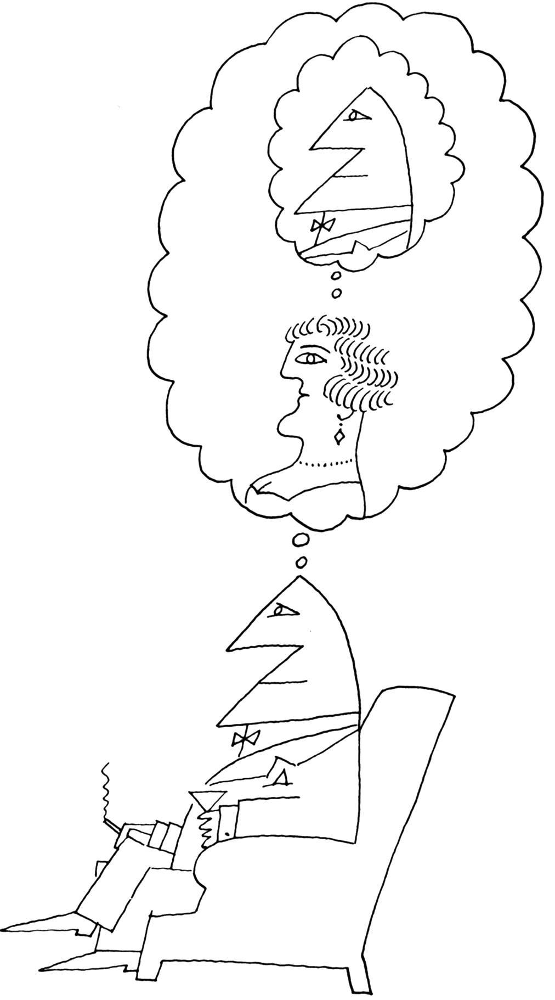

本图来源于《纽约客》1962年6月30日。
Saul Steinberg，Untitled drawing，ink on paper.
Originally published in The New Yorker，June 30，1962.
©The Saul Steinberg Foundation/Artists Rights Society（ARS），New York
1946年百老汇音乐剧《飞燕金枪》（Annie Get Your Gun）是根据传奇神枪手安妮·奥克利（Annie Oakley）的真实故事改编的。1875年，15岁的她打败了26岁的神枪手弗兰克·巴特勒（Frank Butler），巴特勒也是“水牛比尔狂野西部秀”的当红明星。在音乐剧中，安妮立刻爱上了她英俊的对手，但她相信自己高超的射击技术会威胁到他的自尊心。她意识到自己必须在拍摄成功和获得爱情之间做出选择。在唱完“你不能得到一个持枪的男人”之后，安妮故意在第二场射击比赛中输给弗兰克，弗兰克恢复了男性的骄傲，立刻爱上了安妮；从狂野西部秀明星回归之后，他们一直幸福地生活在一起。
这部戏曾轰动一时，激发了好莱坞电影和电视连续剧的灵感，充分地利用了其中的一些关键事实。真正的安妮和弗兰克从此过上了幸福的生活，但弗兰克从不羡慕安妮的枪法；他对两人的选择感到高兴，并愉快地放弃了自己的明星地位，支持安妮并担任她的业务经理和舞台助理。这对夫妇游览了美国和欧洲，在这些地方安妮用她的步枪令观众眼花缭乱：击灭点燃的蜡烛，击打高高抛在空中的小硬币，在一次对安妮的枪法和弗兰克的信任进行考验的令人毛骨悚然的测试中，她射中他嘴唇边一支点燃的香烟。弗兰克和安妮婚后幸福地生活了五十年，直到她死于贫血。安妮死后，弗兰克显然受到了沉重的打击，失去了活下去的意愿，停止进食，并在她葬礼后的第十八天去世。1
为什么这部音乐剧没有讲述真正的爱情故事？这部音乐剧的虚构版本反映了当时（以及几十年后）普遍存在的性别刻板印象，在这种刻板印象中，女性应该让自己变得漂亮、甜美；最重要的是，要避免超过那些天赋或才智较低的男性。音乐剧里的虚拟安妮做了所有这些事情来吸引弗兰克。他们的故事在本章中有很多要讨论到——有关吸引力、友谊、爱和人际关系。是什么导致人们之间相互吸引呢？是什么激发了爱、激情和我们称之为爱情的更神秘的东西？为什么像安妮和弗兰克这样的夫妇会陪伴一生直到老死，而有些人会很快中断关系，或者像半数婚姻那样在历经八年之后走向终点？
“谁喜欢谁”这个问题由来已久。第一位生活在山洞里的业余社会心理学家无疑想知道，他能做些什么来让住在邻近山洞里的人更喜欢或者更不喜欢他——或者，至少，让他不要将棍子敲向自己的头。也许他带来了一些剑齿虎肉作为礼物，希望能做到这一点；也许他尝试了一种新的方式来展示他的牙齿——不是用咆哮、威胁的表情，而是用一种更柔和、更温顺的方式——这种方式最终演变成了我们称之为微笑的表情。2
在满足了基本的生存需求之后，我们最强有力的动机是与他人建立有意义的联系。3除了让我们自己快乐外，良好的人际关系确实让我们得以生存。想想哈佛大学的一项引人注目的研究，该研究花了七十五年的时间跟踪了波士顿地区的两组男性（一组是哈佛大学的富裕男性，第二组是工人阶级男性），从他们的青春期直到老年。因为这项研究是在女性被允许进入哈佛大学之前开始的，所以只有男性被试。这项研究的目的是为了确定那些可以预测身体健康、心理健康和晚年幸福感的因素（包括经验、资源和生活条件）。他们得出了何种结论？根据这项研究的现任主任罗伯特·沃丁格（Robert Waldinger）的说法，“我们从这项七十五年的研究中获得的最清晰的信息是：良好的人际关系能让我们保持幸福和健康”。4在哈佛的这项研究中，最幸福的人不是那些取得骄人成就的人，不是那些获得最多金钱的人，也不是那些童年最快乐的人，而是那些优先考虑与他人关系的人。这些人最有可能活到80岁或90岁，而且会享受生命的乐趣。
许多研究证实，提供支持、陪伴和爱的关系有益于健康，不管是在压力状态下还是在欢乐岁月里。5相比之下，孤独并不会产生更多的压力事件，但它是压力源转化为疾病的一个危险因素。人们发现，孤独的人睡眠模式效率较低，血压较高，受到伤害时，他们比那些不孤独的人痊愈得要慢。6然而，重要的是，不要将这些数据解释成为什么人们必须结婚或建立一种稳定的浪漫关系——为了从这种关系中获得长期利益。单身生活是完全健康的，造成问题的是孤独和孤独感。7个人可能在被他人包围的情况下，体验到孤独；他们也可能在独自生活的状态下，拥有丰富的社会生活。在20世纪50年代，大多数人认为喜欢单身的成年人是“不道德的”或“神经质的”，但如今这种耻辱感已经消失；一半的美国成年人选择单身，这个数据是20世纪50年代的两倍多。事实上，单身生活有其自身的社会和身体优势：与已婚或同居的人相比，单身者更有可能与朋友外出吃饭、去锻炼身体、去上艺术和音乐课、去听讲座、去做志愿者工作。8你不必拘泥于保持忠诚的关系。换句话说，你所需要的仅仅是保持联系。9正如那位孤独的鳏夫弗兰克·巴特勒（Frank Butler）所说过的，也是哈佛大学健康研究院前任主任乔治·瓦利安特（George Valliant）在论及这项研究时所提及过的，“整场射击比赛其实就是联系”。10
喜欢：别人用什么吸引我们，他们又因何喜欢我们？
当我寻问一些人为什么他们比其他人更喜欢自己的一些熟人时，我得到了各种各样的回答。最为典型的是，他们喜欢那些信仰和兴趣与自己相似的人；那些拥有对我们有用的技能或能力的人；那些具有愉悦或令人钦佩的品质，如美丽、魅力、机智、忠诚、诚实和善良的人；那些同样也喜欢他们的人。
所给出的这些理由很有道理。它们与戴尔·卡内基（Dale Carnegie）11在他的书中给出的建议也颇为一致，该书的标题是“如何赢得朋友和影响他人”。这本人际关系手册似乎正是人们所想要的。该书于1937年首次出版，至今仍在再版，并被证明是有史以来最畅销的书之一。这并不令人奇怪。人们想有归属感，觉得自己很重要；我们期待被人喜欢。几十年来对高中生的民意调查显示，12他们最关心的是别人对他们的反应方式，他们压倒性的愿望是让人们更喜欢自己。这种担忧在青少年时期可能是最大的，因为同龄人群体具有极大重要性，被喜欢的愿望当然不仅限于美国青少年。寻找一种吸引他人的通用公式是可能的。毕竟，戴尔·卡内基的书已经被翻译成35种语言，并且仍在全球范围内畅销。
卡内基的建议非常简单：如果你想让人们喜欢你，就要和蔼可亲，假装你喜欢他们，假装对他们感兴趣的事情感兴趣，给他们以赞扬，要表示赞同，不要试图批评，而且要确保尽可能多地使用他们的名字，因为“普通人对自己的名字比对世界上所有其他名字更感兴趣”。换句话说，卡内基确信我们大多数人都像虚构的弗兰克·巴特勒；如果你想赢得我们的爱或影响我们，那么尽你所能让我们感觉良好，避免做一些让我们感到不舒服的事情，就像在射击比赛中打败我们一样。
这是真的吗？这些策略有效吗？在一定程度上是这样，至少是在相互认识的早期阶段。实验室实验表明，与那些具有不愉快特征的人相比，我们更喜欢具有令人愉快特征的人；13我们更喜欢同意我们意见的人，而不是不同意我们的人；我们更喜欢那些喜欢我们的人，而不是那些不喜欢我们的人；我们更多喜欢与我们合作的人，而不是与我们竞争的人；与那些批评我们的人相比，我们更喜欢那些赞美我们的人。吸引力的这些方面可以归纳为一个笼统的概括：我们喜欢那些以最低成本为我们提供最大回报的人。14
一般来说，我们知道我们喜欢那些让我们在某种程度上感觉良好的人，但除了这些相当明显的理由之外，还有什么会让人们相互吸引呢？约翰·蒂鲍特（John Thibaut）和哈罗德·凯利15很久以前一直认为，我们计算一个人作为朋友或浪漫伴侣的价值，部分是通过将他们带给我们的东西，与我们从其他潜在朋友或浪漫伴侣那里得到的东西进行比较。简而言之，吸引力部分地取决于我们对替代品的比较水平。马克斯（Max）是个好人，但罗杰（Roger）更可爱，受教育程度更高，和我住得更近。如果我认为自己有足够的魅力赢得罗杰的爱或友谊，马克斯便可能会看起来不那么有吸引力。
但是，关系并不总是那么简单，并不总是能够进行成本效益计算。人们期待感觉良好，但他们也有其他动机，长期友谊和浪漫关系也不只是让人们彼此感到高兴。因此，我们需要的不仅仅是用一种简单的吸引力奖励理论，来理解吸引力、友谊和爱情复杂且有时令人困惑的本质。
现在，我将讨论对我们选择朋友和爱人有深远影响的五个相对稳定的因素：我们倾向于喜欢生活在离我们较近地方的人；我们喜欢与我们相似的人；我们喜欢那些喜欢我们的人；我们喜欢具有吸引力的人。在此基础上，我将添加一个由我们的高科技世界创造的相对较新的现象，一个深刻影响我们会喜欢谁、我们会选择谁、我们是否会留下来的因素：所谓的选择悖论。
距离接近 你之所以发现某个人有吸引力并且萌生对他进行了解的可能性，往往是从他与你的生活距离开始的。有什么更为明显的证据吗？当要求人们说出他们最喜欢的人时，那些宿舍被随机分配的大学生中约有一半会将他们认定为隔壁邻居。16人们很难与不认识的人交朋友，却很容易与附近的人保持友谊，所以这是有道理的：以小的代价获取友谊作为回报。但是，近在咫尺增加了吸引力，原因却不仅仅是便利和实用。距离越近，我们就越有可能反复接触；而且，在所有其他条件相同的情况下，人们彼此之间越是熟悉就会变得越发可爱和越有吸引力。就像我们一遍又一遍听着某一首歌一样，随着时间的推移我们对这些人会越加喜爱。此外，正如我在第3章中所指出的，当我们希望将来与他们互动时，人们会对我们更具吸引力；当我们知道我们将会与某人相处一段时间时，认知失调会帮助我们看到他们的优良品质，忽视或淡化他们的缺点。17
距离接近一向是婚姻中的一个重要因素。詹姆斯·布罗萨德（James Brossard）18分析了20世纪30年代费城的婚姻记录，发现大多数婚姻都与居住接近有关：三分之一的婚姻出现在彼此居住在5个街区内的人之间；六分之一的生活在同一街区；八分之一的来自同一栋公寓楼；只有五分之一的婚姻来自不同的城市。当喜剧演员阿齐兹·安萨里（Aziz Ansari）和社会学家埃里克·克林伯格（Eric Klinenberg）19在纽约市的养老院中设立焦点小组时，他们对这些老年人遇见自己生活伴侣的一致性感到震惊。安萨里写道：“人们与生活在同一个社区、同一条街道，甚至同一栋楼里的人结婚。”“看起来有点奇怪。我说，‘伙计们，你们住在纽约市。’你有没有想过，‘哦，也许我所居住的那栋楼外也会有人？’为什么要限制自己？他们只是耸耸肩说，这不是他们想要做的。”20
与以往没有说明不同，今天无可争辩的事实是，在地理上离你最近的人最有可能成为你最亲爱的人。这打破了浪漫的神话：只有一个人在外面（可能是在亚祖城或者保加利亚！）等待你的出现。自古至今，人们最喜欢和住在邻近山洞或者自家附近，或在附近学习或在同一家商店、办公室或工厂工作的人一起生活。即使在这个交友软件风行的互联网时代，接近仍然是找到爱情的第一步：你和你的“唯一”必须同时选择同一个交友网站，而你们之中的一位必须在一个懒散的下午（或“某个迷人的夜晚”）遇到另一位。有足够的时间和动机来发送一篇迷人的文本。然后，另一方必须阅读并记住隐没在其他潜在追求者发送的浩如烟海文本中的这个文本并加以回复。你在亚祖城的真爱现在可能更容易得到，但他（她）只是众多数字人群中的百万分之一，这意味着你只有生活在亚祖城，你才能够找到你的爱人。其他人则会选择离自家住处较近的人。
相似性 林恩参加一个聚会，并被人介绍给苏珊娜。虽然他们只聊了几分钟，但事实证明，他们完全同意对方对乔治·布什、乔治·克鲁尼（George Clooney）、乔治·艾略特和英格兰国王乔治三世的看法。两个人都回到各自的宿舍，并告诉他们的室友，自己刚刚遇到一个很棒、很聪明的人。林恩和苏珊娜会发现自己置身于成百上千的实验之中，这些实验表明：在你看来，一个人在态度、观点和兴趣上越相似，你越喜欢他。与自己在上述方面对立的人可能也会吸引人，但最终不会走到一起。
为什么感知到的相似性使人更具吸引力？至少有两个主要原因。第一，对我们大多数人来说，在重大问题上分享我们态度和观点的人都是非常聪明和体贴的，与聪明和体贴的人相处总是有益和有趣的。他们当然具有吸引力，因为他们赞同我们！第二，他们为我们的信仰提供了社会验证；也就是说，他们满足了我们感觉正确的愿望。
此外，我们人类对态度相似性与喜欢之间的关系是确定无疑的，如果我们碰巧因为一些不相干的原因喜欢某个人（比如说，我们都对共同的发现感兴趣），我们会假设我们对政治、宗教和电影也有相同的态度。因此，因果关系在两个方面都会起作用：我们喜欢态度与我们相似的人，如果我们喜欢某个人，我们将他（她）的态度归因于与我们相似。21如果我们感知到与另一个人的相似性，这就足以增强他的吸引力。22这一原则适用于所有人以及各种关系，并且已被证明是一种有效的营销方法。电话营销人员经常接受培训，以确定并指出与人们的某些相似之处（“嘿，我也是一名学生！”），因为我们更可能从我们喜欢的人和我们认为与我们相似的人那里购买东西。23
亨特·格尔巴赫（Hunter Gelbach）和他的同事24甚至利用相似性和喜爱效应来改善学生和老师之间的关系。一所大型高中的老师和学生填写了一系列主题广泛的调查，包括他们对业余时间喜欢做什么的偏好。研究人员将这些答案随机分配给老师和学生，让他们了解其中的五个相似之处。一半的学生知道他们的老师和他们的方式是相似的，他们的老师也得到了同样的信息。这种小小的干预（了解到你们有共同的兴趣，即使是与你某位神秘的老师或学生），增加了相互的喜爱和尊重。在少数民族学生中，这种关系的改善尤其明显，这表明认识到我们在活动、价值观和技能方面的共同点，可以克服我们对民族和种族感知的重要差异。
个人特征：能力 当人们在民意调查或约会网站上被要求描述他们喜欢的人的性格特征和其他特征时，他们会愉快地列出真诚、能干和聪明等品质。但是在这类研究中，很难确定是否具有因果关系：我们喜欢具有愉快特质的人，还是一旦我们喜欢他们，我们便确信他们具有愉快特质？二者很可能是互为因果关系。为了找出原因，有必要在比调查问卷更受控制的条件下检验这种关系。在这里，我们将研究两个最重要的个人特征：能力和身体吸引力。
很明显，一个人越有能力，我们就会越喜欢他。所谓“能力”，指的是一系列的品质：聪明、做事的能力、明智的决定等等。如果我们身边的人都知道他们在做什么，并且有很多东西要指导我们，那么我们便会有更好的机会完成好生活中的任务。但是研究所得到的证据是自相矛盾的：在解决问题小组中，被认为最有能力和最有想法的被试往往不是最受欢迎的人。25为什么呢？一种可能是，尽管我们喜欢和有能力的人在一起，但是那些能力太强的人会让我们感到不舒服。他们看起来不可接近、遥不可及，这让我们看起来很糟糕（感觉可能更糟）。假如这种推断是正确的，那么当看到一些人存在某些易犯错误的证据时，我们可能更喜欢他们。例如，如果你的朋友是一个杰出的数学家、优秀的运动员或美食厨师，那么如果他们偶尔搞砸了，你可能会更喜欢他（她）。
1961年，约翰·F·肯尼迪总统作出了一个可怕的决定，要入侵古巴的猪湾，企图推翻菲德尔·卡斯特罗（Fidel Castro），这促使我对这一假设进行了实验研究。这次入侵是一个惊人的错误，并且至今仍被公认为“猪湾惨败”。但是，这次入侵并没有令肯尼迪的声望骤降，反而让人们更喜欢他了。我想知道为什么会这样。有一种可能是肯尼迪“太完美了”，那一年，肯尼迪的魅力达到了顶点。他几乎已经成了某本故事书里的标志性人物——事实上，他被称为总统卡米洛特。他年轻、英俊、聪明、机智、迷人，而且运动健美。他是一位如饥似渴的读者，一本畅销书的作者，一位长期遭受身体疼痛而没有抱怨的战争英雄。嫁给他的是一位才华横溢、美丽动人的女人，她会说几门外语，拥有一双可爱得不能再可爱的儿女，是一个富有、显赫、关系密切的家族中的一员。换句话说，他是令人羡慕的完美。是否有一些可靠性的证据，比如负责某次重大的战术而出现了错误估计，由此可能会令他在公众眼中变得更加人性化、因此也更可爱？
正如你现在所知道的，现实世界中无法检验这样的假设。在现实世界中，太多事情同时发生，任何一件事都可能增加肯尼迪的声望。例如，在惨败发生之后，他没有试图找借口或推卸责任；他承受了全部责任。仅此一项行动，也便可以使自己在民众心目中更具吸引力。
我对肯尼迪的受欢迎程度出现激增感到好奇，于是我和我的同事本·威尔曼（Ben Willerman）、乔安妮·弗洛伊德（Joanne Floyd）对这个问题进行了实验研究。26我们告诉一些男性大学生被试，我们希望他们对那些正在代表他们学校参加一项类似课堂冒险游戏的智力竞赛节目的选手进行评估。他们要做的是评估对这些选手的印象，以及他们看起来有多么可爱。然后，他们会听到一位年轻人（刺激者）和一位提问了一系列难题的访谈者之间的访谈录音。我们有四个版本的录音采访。在第一盘录音中，这位选手表现出了很强的能力，实际上他似乎也非常完美，回答了92%的问题。当被问及他在高中的活动时，他谦虚地承认自己曾是一名优秀学生、年鉴编辑和田径队员。在第二盘录音中，这位选手被认为是一位能力一般的人：他只答对了30%的问题，在访谈中他承认自己在高中时获得的只是平均成绩，在年鉴工作中只是担任校对员，参加了田径队的选拔但没能成功。在另外两盘录音中，“优秀”选手和“平庸”选手都犯了一个尴尬的错误：笨拙地将一杯咖啡洒在自己身上。（我们通过记录骚动和碰撞的声音，椅子的刮擦声，以及选手所发出的痛苦叫声显示他把咖啡洒在了自己的新衣服上，设计了这样一个有“破绽”的版本。）
结果证实了我们所说的破绽效应：犯错误的优等生被评价为最有吸引力；犯同样错误的普通人被评价为最没有吸引力。完美的人（没有错误）在吸引力上名列第二位，平庸的人（没有错误）排在第三位。显然，洒一杯咖啡本身没有什么吸引力。虽然这确实为完美的人增加了一个讨人喜欢的维度，使他更具吸引力，但同样的行为也会使平庸的人显得更平庸，因此也更不具有吸引力。这个实验给我们提供了证据以支持我们的论点：尽管较高的能力确实会使我们更具吸引力，但一些易出错的证据有时会进一步增强我们的吸引力。
这种普遍现象也被扩展到了长期关系中。亚伯拉罕·特塞（Abraham Tesser）27发现，我们从能力很强的朋友和亲戚中获得极大的满足感和自尊。接近有能力的人是值得的；我们可以向他们学习，享受他们的荣耀和成功。28然而，如果他们在那些对我们而言重要的领域比我们更有能力，因此通过比较使我们感到自己无能或存在缺憾时，他们在我们心目中的吸引力便会减弱。特塞的研究表明，如果兄弟姐妹、亲密朋友和恋人在不同的领域表现卓越，他们可能会更容易保持亲密关系。现实中的弗兰克·巴特勒放弃了神枪手的职业生涯，转而帮助安妮·奥克利打理事务，朝着确保一生的亲密关系迈出了明智的一步。他不再是她的竞争对手，这样他便可以沐浴在她的光辉之中而不被削弱。
个人特征：身体吸引力 想象一下你刚刚约会过。快到晚上了，你要决定是否要和这个人再出去。你约会对象的哪些特征最重要：热情、敏感、智慧、富有同情心？还是好看的外貌？你一定会猜中！
大多数人不希望这是真的。人们更愿意相信美貌只是肤浅的，因此，它是决定喜爱与否的一个微不足道的因素。而且，这似乎是不公平的；为什么像身体吸引力这样的东西，在很大程度上超出了一个人的控制，会有那么重要吗？尽管许多人认为外貌吸引力对男性比女性更重要，但一项对29000多人的分析发现，外貌吸引力对男性和女性同样重要。29在对大学生和普通人群的真实行为进行研究之后发现，外貌对他们来说是非常重要的。30伊莱恩·瓦尔斯特和她的同事31随机匹配明尼苏达大学的新生。学生们以前接受过一系列的个性测试。在他们的许多特征中，哪一种会决定他们是否彼此喜欢：智力、男子气概、女性气质、支配力、顺从、依赖、独立、敏感、真诚？结果显示，决定一对情侣是否喜欢对方并重复约会的一个因素是他们的外貌吸引力。Tinder[1]和其他约会应用程序的成功，摒弃了“个性档案”和“你理想伴侣的个性”，这表明我们可以多么迅速而彻底地仅凭一张照片就将另一个人拒之门外。
但是，正如相似效应所表明的那样，人们倾向于在相同的吸引力水平上配对。在这项由瓦尔斯特和她的同事进行的研究中，如果一个英俊的男人和一个漂亮的女人配对，他们很有可能希望再次见面。32格雷戈里·怀特（Gregory White）在加州大学洛杉矶分校研究了年轻情侣之间相对长期的关系。在情侣们开始约会的许多个月后，那些外表匹配良好的情侣比那些不匹配的情侣更加深入地融入彼此。甚至电影中美女的野兽最终也会展现出他英俊的一面。
美貌也会影响到我们对他人作出的许多归因。卡伦·迪翁（Karen Dion）和她的同事们33向大学生们展示了三个大学生的照片：一个长得漂亮，一个相貌平平，还有一个有些难看。被试被要求基于27种不同的性格特征给每个人打分，并预测他们未来的幸福程度。到目前为止，身体有吸引力的人被赋予了最理想的性格特征，并被预测会得到最大程度的幸福。无论是男性评价男性或女性，还是女性评价男性或女性，结果都是如此。
一些进化心理学家认为，人们认为“美丽”的某些方面是与生俱来的，反映出人们对看起来健康、没有疾病的伴侣的偏爱。34但是，这是一个引起相当大争议的问题，因为在汤加（Tonga）[2]圆脸和丰满的身体被认为是很漂亮的，但在塔拉哈西（Tallahassee）[3]却可能被认为是没有吸引力的，而在某个种族或族裔群体中被认为性感的特征可能是人们所不熟悉的，因此对其他群体的成员没有吸引力。尽管如此，西方人对美好与美好的联想始于他们童年的经历和文化联想：迪士尼电影和流行动画片教会孩子们，白雪公主、灰姑娘、睡美人、小美人鱼等白人女主角，以及最近的一些少数民族女主角，如蒂亚娜（Tiana）[4]、波卡洪塔斯（Pocahontas）[5]、奥罗拉（Aurora）[6]、木兰、茉莉和莫阿娜（Moana），[7]以及吸引和赢得她们的王子们，都拥有这样的个性特征：小鼻子、大眼睛、嘴唇匀称、肤色无瑕疵、身材苗条健美。他们都像芭比娃娃和肯娃娃。然而，邪恶的继母、继姐妹、巨人、巨魔和邪恶的皇后又是被如何描绘的呢？
然后是广告，连续不断的宣传攻势，旨在推销这样一种观念：瓶中女人[8]会让我们变得更有吸引力，在社会上获得成功，从而变得快乐和完整。接触这些画面的确会对人们产生影响，尤其是对青少年而言。在一项实验中，女高中生观看了15个赞美美容产品的广告；35另一组青少年观看了15个与美容产品无关的广告。随后，所有的年轻女性被要求对10项特质的相对重要性进行排名，包括性感、智慧、漂亮的脸蛋和勤奋。与对照组相比，看过美容广告的年轻女性更有可能认为美貌比其他品质更重要。
可悲的是，美貌偏见意味着没有魅力的孩子要为他们的外表付出代价。卡伦·迪翁36要求女性评估课堂捣乱的报告，显然是由老师写的。每一份报告都附有一张孩子的照片，据说是他（她）引起了麻烦。在一些照片中，这个孩子很有吸引力，而在另一些照片中则没那么有吸引力。这些女性倾向于把更多的责任推给那些不太漂亮的孩子，并推断出这一事件是他们日常行为的典型表现。然而，当孩子脸蛋漂亮时，她们往往会原谅孩子的捣乱行为。正如其中一位女士所说：“她和每个人都相处得很好，但就像其他人一样，糟糕的一天也可能会出现。她的残忍……不必当真。”当一个不那么漂亮的女孩以同样的方式被描绘同样情况下的所作所为时，一个典型的回答是：“我认为这个孩子太调皮，可能会给老师带来麻烦。她可能会和其他同龄的孩子打架……总之，她会成为一个真正的麻烦。”因此，我们似乎倾向于相信有魅力的孩子是无辜的，他们的错误行为是可原谅的。我们不会让不那么有魅力的孩子轻易地摆脱责任；他们的错误行为被归因于稳定的、消极的人格倾向。类似的效应在各个年龄段以及商业环境中都有发现。在商业环境中，吸引人的工人往往会得到更好的报酬，晋升的频率也更高。37
美貌赋予人们以力量，但美貌也有一个缺点：人们会对批评自己长相漂亮的人更为苛刻。在我与哈罗德·西格尔（Harold Sigall）38所做的一项实验中，一位女性被打扮成具有吸引力或不吸引人的样子（穿着不合身的衣服，戴着丑陋的假发），接下来她对几位男性大学生进行了访谈。之后，她给每个学生提供了他们本人的评价。一半的学生得到了很好的评价，另外一半学生得到了不好的评价。当评价者打扮得不吸引人时，男生们似乎不太关心他们从她那里得到了一个好的评价，还是得到了一个差的评价；在这两种情况下，他们都挺喜欢她。然而，当她打扮得很吸引人，当她给他们一个有利的评价时，他们会非常喜欢她，但是当受到她的批评时，他们会比任何时候都更讨厌她。
考虑到所有这些研究，我们必须面对一个事实，那就是漂亮不仅仅是肤浅的。我们更喜欢漂亮的人，我们对他们更友好，我们认为他们比长相平平的人更温暖、更性感、更令人兴奋。此外，在不确定谁应该为不幸事件负责的模棱两可的情况下，我们倾向于假定他们是无辜的。这种“美貌偏见”从很小的时候就开始了，不幸的是，随着时间的推移，它会产生一种自证预言，正如马克·斯奈德、伊丽莎白·德克尔·唐克（Elizabeth Decker Tanke）和爱伦·博施德39在一项经典实验研究中所展示的那样。在他们的研究中，要求被试把自己置于一个典型的男性大学生的位置上：你自愿参加了一项关于“人们如何相互认识”的调查，你与另一个房间里的一名女学生搭配，表面上是因为你们两人被分配到了研究的“非语言交流”状态。尽管你没有看到你的搭档，但你已经收到了一个包括她的照片在内的信息包。当你通过对讲机与她交谈时，你认为照片中女人的外在魅力会影响到你对她的印象吗？
正如你可能怀疑的那样，这张照片呈现的并非被试的真实搭档。对其中一半人来说，照片上是一个非常迷人的女士；而对其他人来说，照片上的女士则相对缺乏吸引力。与那些认为自己在和一位不太漂亮的女士交谈的男性相比，那些认为自己在和一个漂亮女士交谈的男性会认为她更镇定、更幽默、更擅长社交。到目前为止，这正是我们所期望的。但令人吃惊的是，当独立观察者只听到录音中女性谈话的部分（不看照片）时，他们对那些男性搭档认为自己外表迷人的女士印象要深刻得多。这意味着，当男性搭档认为他在和一位漂亮的女士交谈时，他会用一种能够展现她最好品质的方式和她交谈。当独立观察者听到她的谈话时，他们认为她比伴侣认为她不那么漂亮的女人更有吸引力、更自信、更活泼、更热情。这项研究为自证预言提供了一个生动而感人的例子：不管一个人的外表是否漂亮，当人们把他们当作有吸引力的人来对待时，就会把那些令人向往的品质展现出来。
我想强调的是，有关“美”的讨论集中在视觉美上。我们的感知机制对我们的情感和行为以及我们决定谁更有吸引力的方式有着极其保守的影响。但是还有其他种类的美。在20世纪60年代和70年代，当敏感性训练小组处于最受欢迎的时候，许多人自愿参与非视觉感官体验。在我领导的一个小组中，有50位参加者被要求闭上眼睛，在房间里四处走动，仅仅通过触摸和相互交谈来相互认识。在参加这个练习之后，小组成员通常报告他们以前的刻板印象已经被粉碎。如果你看不到其他人，你就不能认为他们是“丑”的，因此你不能假定他们具有“丑”人所具有的特征。当参与者随后睁开眼睛时，他们常常惊讶地发现，例如，站在他们面前的长着大鼻子和粉刺的滑稽男子，正是五分钟前（闭上眼睛时）给他们留下了难以置信的温暖、温柔、敏感印象的人。这是一个让许多参与者永远不会忘记的经历。
在我们的许多判断中，我们的心会追随着我们的眼睛。但随着时间的推移，我们的眼睛也能跟随着我们的心。我们许多人都知道，当我们对一个人的好感增加时，我们会发现这个人会变得更漂亮，这不仅仅是因为我们把他的长相和其他品质平均到了一个整体的评价中去了，而且是因为我们对他的感觉增强了，所以我们认为他更漂亮了。40相反的情况也会发生：我们认为很帅或很漂亮的人，随着我们对他的了解变得不那么漂亮了，不喜欢他那令人讨厌的个性或令人讨厌的信仰。美的东西是好的，但好的东西也会变成美的。41社会神经学家乔恩·弗里曼（Jon Freeman）42指出，我们给自己对面孔的感知带来了大量的“心理包袱”。如果我们像在Tinder上所做的那样，主要用眼睛来评估潜在的伴侣，我们就很容易错过一些潜在的极好的人，他们的美丽绝不是一眼就能欣赏到的。对弗兰克·巴特勒来说，这无疑是真的；安妮·奥克利长得并不漂亮，但让他一生倾心的并不是她的容貌。
讨人喜欢 决定我们是否喜欢某个人的最有力的因素之一，是相信某人喜欢我们。这一点是如何起作用的呢？想象一下，在一位共同的朋友介绍我们相识之后，你和我在一个聚会上进行了一次简短的、相当平静的谈话。几天后，你在校园里遇到了我们的朋友，她告诉你，派对结束后，我向她说了一些赞美你的话。你觉得下次你和我碰巧见面时你会怎么做？我的预感是，你知道了我喜欢你，可能会导致你喜欢我，并会采取进一步的行动，让我知道你也喜欢我。相比你还不知道我喜欢你，你可能会笑得更多，更多地展示自己，表现得更热情、更有兴趣、更讨人喜欢。你认为你的行为会对我产生什么影响？面对你热情可爱的行为，我对你的喜爱无疑会增加，反过来，我也会用更讨人喜欢的方式来表达我对你的喜爱。
但想想看：假如我们共同的朋友没有说实话呢？如果她预计，如果我们俩相互了解得越多，我们相互喜欢的可能性会越大，为了推动这一好事，她告诉你我喜欢你，即使我一个字也没说，结果会怎么样？她的善意计划成功的可能性会有多大？好吧，如果你和我像丽贝卡·柯蒂斯（Rebecca Curtis）和金·米勒（Kim Miller）43所做实验的被试一样，她的计划就会非常奏效！这些研究人员让一些人相信另一个人喜欢他们，让另一些人相信同一个人不喜欢他们。在随后的互动中，那些认为自己被喜欢的人表现得更讨人喜欢：他们比那些认为自己不受欢迎的人透露更多有关自己的信息，不那么提出反对意见，而且通常对他人表现得更热情、更愉快。此外，那些认为自己被喜欢的人，事实上，后来也被另一个人喜欢；而那些认为自己不受欢迎的人，也不会被另一个人喜欢。这是自证预言的又一个例证。我们的信念，无论对错，都在塑造现实中扮演着重要的角色。
因此，被人喜欢会让两颗心变得更亲密。此外，我们的不安全感和自我怀疑越强，我们就会越喜欢那个喜欢我们的人。伊莱恩·瓦尔斯特（Elaine Walster）44做了一项有趣的实验，一些女大学生在等待性格测试结果的时候，遇到了一位圆滑、英俊的年轻男子，他实际是实验者的帮手。他开始和每个学生交谈，表示他喜欢她，然后开始约会。这时，实验者走进来，把每个学生领进一间办公室，告诉她的测试结果。一半的学生得到了非常正面的描述，旨在暂时提升她们的自尊。另一些人则收到了一些负面的描述，旨在暂时降低她们的自尊。最后，学生们被要求对她们喜欢的各种各样的人（老师或朋友）进行评分：“既然我们还有点空闲，为什么不评价一下你在等的那个人呢？”收到负面反馈的学生比收到正面反馈的学生更喜欢自己的男性崇拜者。简而言之，我们喜欢被人喜欢——我们越没有安全感，就越喜欢那些喜欢我们的人。
这个实验的一个含义是，对自己有安全感的人不那么“需要帮助”；也就是说，他们不太可能接受任何主动提出的建议。就像一个饥肠辘辘的人会接受几乎任何类型的食物，一个营养充足的人可以拒绝一份新鲜的奶酪三明治，一个没有安全感的人会接受几乎所有表示感兴趣的人，而一个有安全感的人会更加挑剔。此外，一个没有安全感的人甚至会找一个不那么有吸引力的人来减少被拒绝的可能性。45萨拉·基斯勒（Sara Kiesler）和罗伯塔·巴拉尔（Roberta Baral）在一项实验中验证了这一观点。他们让男性大学生相信他们在智力成绩测试中做得很好或很差。然后在他们稍事休息之后，实验者和这些学生一起喝了杯咖啡。当他们进入咖啡店时，实验者“认出”一个单独坐在桌旁的女学生，邀请她加入，并向她介绍了男被试。当然，这名女学生是一名帮手，故意让她出现在那里。有一半的时间，她打扮得很迷人；在另一半时间里，她看起来很普通。研究人员观察了男被试所表现出的浪漫兴趣的程度：他们是要求再次见到她，主动为她付咖啡钱，询问她的电话号码，还是试图让她多待一会儿。那些对自己有安全感的人（即那些被引导相信自己在测试中表现良好的人）对“有吸引力”的女人表现出更多的浪漫兴趣；那些被诱导感到不安全的人对“没有吸引力”的女人表现出更多的浪漫兴趣。
虽然不安全感确实增加了我们与任何我们所期待的人联系的欲望，但是在约会的条件下，我们往往更容易被那些似乎只喜欢我们的人所吸引——只有我，而不是所有其他成千上万的人，在等待着这样一次机会。那些看上去喜欢所有人的人，似乎对他们的感情不那么挑剔，因此他们远不如那些挑剔的人更受欢迎。保罗·伊斯特威克（Paul Eastwick）和伊莱·芬克尔46在一项实验中研究了这一现象，其中一组青年男女参加了一项多次速配的约会。之后，他们被要求评估自己所经历的每次约会的可取性、吸引力、是否产生了化学反应、是否会同意另一次约会；而最有趣的，是让他们评估自己心目中的选择对象，以及他们希望约会对象答应其他人约会邀请的数量。对所有约会都感兴趣的人在约会时也很可能会对所有潜在的第二次约会说“是”。但他们的约会伙伴认为，这些热情、容易获得满足的参与者不那么受欢迎，对他们个人来说，他们的化学反应也不那么强烈。当参与者认为他们的伴侣只想和他们第二次约会时，他们会更乐意做出回应。这项研究或许可以解释，当调情进展顺利时，人们会有一种令人兴奋的感觉，感觉房间里除了你和那个特别的人，没有其他人。这是一种令人兴奋、令人振奋和建立自尊的感觉，远远好过看着那个“特别的人”在最终接近你之前、先和房间里的其他人搭讪。
选择的悖论 所以现在你找到了自己的真命天子：住在你附近的某个人；他（她）和你有很多相同的价值观和信仰；这是一个喜欢你的人，而且他（她）所喜欢的人只有你；他（她）是一个长相英俊或漂亮的人。现在怎么办呢？你会说：“我找到了我的人生伴侣！抓住这个机会吧！”或者你会说：“嗯，等等——这真的是最适合我的人吗？也许我很快会遇到更好的人？”
现代世界扩大了我们在生活各个领域的选择范围。曾经有一款名为莱维斯（Levis）蓝色调品牌的牛仔裤，这款牛仔裤要么适合你，要么不适合。现在有数不清的品牌，每一个品牌都有几种选择，像靴型、直腿型、修身型、休闲型、高腰型、低腰型或撕裂型。以前你可能从几种谷物中做出选择，现在你一下子拥有了400多种不同的选择，在超市里可以摆满整个通道。正如巴里·施瓦茨（Barry Schwartz）47所指出的，人们认为拥有更多的选择总是比拥有很少的选择好，所以当你问他们时，他们总是说想要更多的选择。但是施瓦茨发现，拥有太多的选择可能会产生一个悖论：能够在多种选择中作出选择固然很好，但当所有这些选择一起妨碍我们作出任何决定时，情况就不那么好了。如果我们看得足够久，我们会想，我们总能找到一条完美的牛仔裤、麦片粥、学校、工作……或者伴侣。随着选择的增多，我们对完美的期望也越来越高，这意味着我们常常会这样想：如果我们观察得更久，是否会作出更好的选择。施瓦茨认为，由此而导致的结果是，我们变得更加挑剔，对最终的选择不会太满意；为了追求完美，我们不得不权衡和评估如此之多的选择，这让我们疲惫不堪。有时我们只是被众多的选择所麻痹，最终什么也没有做。
希娜·艾扬格（Sheena Iyengar）和她的同事48走进一家超市，摆了一张桌子，上面摆着免费的果酱样品。每隔一段时间，他们就会从提供24种果酱切换到提供6种果酱。24种选择令人印象深刻，不少人会受到吸引：60%的顾客会停下来，而仅有20%的人会在只有6种选择困境的情况下停下来挑选。不管桌上果酱的数量有多少，停下来的顾客通常会品尝两种果酱。顾客品尝完后，会得到一张打折1美元的优惠券。问题是，谁会去购买果酱呢？尽管更多的选择吸引了更多的顾客，但只有3%的人最终选择了购买某种罐装果酱。在选择范围较少的顾客中，却有超过30%的人带着果酱离开了商店。
像我们的祖父母一样，安妮·奥克利在牛仔裤、果酱或浪漫前景方面没有太多的选择。她就像一个在选择实验中遇到6个选项的购物者；你会面临许多选择，如果你发现他很有魅力，你便会走向他，并充分利用他。你可能会把他和你见过的几个人作比较（“弗兰克比路上那个无聊的牧羊人更令人兴奋！”——的确如此），但你没有将他和其他所有可能的伴侣进行比较。如今，与人见面变得更容易了，因为科技可以让我们立即与更多住在我们附近的潜在伴侣联系起来，这比我们的祖父母一辈子可能遇到的人还要多。但是，就像顾客们面对果酱一样，无休止的选择也可能会导致他们不去做任何选择。
昨日在寻找自己的另一半时，我们可能会问：“和这个人在一起我会快乐吗？”而今的应用程序可以让我们看到自己当前的选择，我们会问：“我能有更好的选择吗？”阿齐兹·安萨里（Aziz Ansari）讲述了“德里克”（Derek）的故事，他是一个相当无聊的人，“根本不具备一下子就能将人吸引过来或令人着迷的魅力”。
通过我们在曼哈顿的在线约会焦点小组，德里克登录了OKCupid，[9]让我们看看他是如何选择的……他点击的第一位女士非常漂亮，她有一个亮丽的个人资料展示页面：拥有一份好工作，还有很多大家都可能有的兴趣，包括对体育的热爱。在浏览了一分钟左右之后，德里克说：“好吧，她看起来不错。我还想再搜搜。”我问他出了什么问题，他回答说：“她喜欢波士顿红袜队。”我完全惊呆了。我简直不敢相信他竟然这么快就离开了。想象一下20年前的德里克，发现这个美丽迷人的女孩一定有约会的可能。如果她在酒吧里对他微笑，1993年的德里克便可能会融化。他不会走上前说：“哦，等等，你喜欢波士顿红袜队吗？！不，谢谢！”然后转身离开。但2013年的德里克只是在网页浏览器的标签上点击了一个×，便毫不犹豫地删除了她。看着他所浏览的资料，很明显，如今在网上，任何一个笨蛋都有可以成为一匹种马。49
正如巴里·施瓦茨所概括的那样：“这是痛苦的药方。”施瓦茨和其他人的研究发现，由大量选择产生的这种思维方式，会导致人们对最终作出的选择不太满意——即使按照客观标准，他们的选择符合他们所说的、他们想要的关系或职业。50
不可避免的人类社会比较过程让选择悖论变得更糟，因为似乎每个人都找到了自己的梦中情人，而你却没有。安萨里说，他去参加朋友的婚礼，听这对夫妇说到他们“彼此最特别、最可爱的地方”。比如，“你是一个棱镜，把生命之光变成彩虹。”“你是润肤露，滋润我的心。”“没有你，我的灵魂会起湿疹。”婚礼结束后，他发现其中的四对夫妇分手了，原因可能是他们觉得自己缺乏那些誓言中所表达的爱。“他们是不是分手得太早了？我听到那些话也感到担忧。我拥有他们所拥有的那种爱吗？”51我们在行动中的确存在着选择悖论：无限的选择让我们把当前的选择比作幻想。没有人能与幻想抗衡。
赞扬和施惠的效果
戴尔·卡内基建议他的读者，赢得朋友的一个好方法就是“慷慨地给予赞扬”。这似乎是一个很好的老式常识，但它总会奏效吗？常识还表明，在某些情况下，批评可能比表扬更有用。假设你是一家科技公司的新员工，正在向你的团队提交一份提案。一位同事被你的话迷住了，微笑着点头，然后他告诉你，你是个天才，这是他听过的最聪明的想法。当然，听到这个消息感觉会很好。相比之下，另一位同事在你的演示过程中一直摇头、愁眉苦脸，然后她告诉你，你的提案有几个方面没有价值。那天晚上，当你反复思考他们所说的话时，你意识到虽然你不喜欢，但第二个人的评论确实包含了一些有效的观点，这迫使你重新思考你的一些假设，并改进你的提议。这两个人你会更喜欢哪一位？这一点很难确定，因为尽管表扬会带来显而易见的回报，但是能够带来改进的批评还会带来其他的回报。
一些研究表明，消极的评价通常会增加我们对评价者的钦佩，只要他（她）所评价的不是我们自己！在一项实验中，特蕾莎·阿玛贝尔52要求大学生阅读两篇专业的小说评论的摘要。两篇评论在写作风格和质量上都很相似，但一篇是非常正面的，另一篇则非常负面。学生们认为，与积极的评价者相比，消极的评价者尽管不太讨人喜欢，但却聪明得多、能干得多，而且是专家。
有时候，人类追求准确和共同理解的动机，会超越被喜欢、被欣赏、被赞美的欲望。我们当然希望得到爱和赞扬，但同样重要的是，我们也希望被了解和理解。53
因此，对赞美原因的了解，会影响我们对赞美我们的人的反应。詹森·劳伦斯（Jason Lawrence）和他的同事54让黑人女大学生参加一项难度较大的测试。在一半的时间里，评价测试的白人女性只是简单地在测试中写下正确的数字（12/14）；但在另一半时间里，她会补充道：“干得好！”尽管表扬会让学生对自己的表现感到满意，但她们似乎对给予表扬的评价者很谨慎，认为她的礼貌程度明显低于只记录分数的评价者。加上一句“干得好”表明，她们的评价者对自己的出色表现感到惊讶，这或许体现的是种族偏见。从某种意义上说，表扬起到了奖励的作用，但它似乎也破坏了这些学生对评价者的信任。
正如你所看到的，人们喜欢被表扬，也倾向于喜欢那个表扬他们的人，但他们也不喜欢被欺骗或虚假赞扬。如果赞美太过慷慨（“这是我一生中读过的最好的文章！”），如果它暗示着惊喜（“干得好——我不知道你很聪明！”），或者如果赞美者似乎是在迎合别有用心的动机，那么赞美可能适得其反。在爱德华·琼斯的一项实验中，55被试更喜欢表扬他们的评价者，而不是那些消极的评价者，但他们对那些赞美可能是别有用心的评价者的喜爱程度会急剧下降。因此，“阿谀奉承不会给你带来任何好处”这句老话是错误的。正如琼斯所说，“奉承会让你有所收获——但并非无所不能”。
施惠，像赞扬一样，也可以被视为奖赏，我们倾向于喜欢那些施惠于我们的人——但是，就像表扬一样，如果我们认为这些恩惠带有附加条件的话，就不是这样了。这种关系构成了对接受者自由的威胁。56如果人们觉得有义务归还东西，他们不一定喜欢礼物；他们不喜欢从有能力施以恩惠的人那里得到好处。如果你是一名教师，你可能会喜欢从你的学生那里收到礼物，如果你觉得他们这样做是出于尊重、感情或乐趣；但是如果一个差生在你即将给他（她）的学期论文评分之前送给你一份昂贵的礼物，你可能会感到不舒服。
对于一只饥饿的老鼠或一个饥饿的人来说，一碗干粮是一种奖赏——无论它是来自男人还是女人，在白天还是晚上，在冬天还是夏天。对于溺水者来说，在任何情况下，施以救援都是一种奖赏。这类奖赏是跨情境的。但是，在我们生活的大部分领域中，赞美和恩惠是否被作为奖赏取决于具体情况；有时，赞美者或施惠者的吸引力，会比他们默不作声或袖手旁观时的吸引力小得多。这就是为什么戴尔·卡内基的建议并不总是正确的。如果你想让别人喜欢你，那么作为一种讨好别人的手段帮他们一个忙，可能不会奏效。相反，你可以试着让别人帮你一个忙。回想一下，在第3章中，我描述过一种现象，叫做为残忍辩护。如果某个人伤害了另外一个人，他们通常会试图通过责备或诋毁受害者来证明自己的行为是正当的。但是辩护过程是与善意行为相伴而行的。如果你帮了某人一个忙，你会试图说服自己，你所施恩惠的接受者是一个有吸引力的、可爱的、应该得到帮助的人，以此来证明你的行为是正当的。实际上，你会对自己说：“为什么我要为威尔付出这么多努力（或者花这么多钱，或者花这么多时间帮他搬家）？因为威尔是个很好的人——这就是我这样做的理由！”
这种观念并不新奇。1869年，世界上最伟大的小说家之一列夫·托尔斯泰（Leo Tolstoy）在他的小说《战争与和平》中写道：“我们爱人们，不是因为他们对我们做了好事，而是因为我们对他们做了好事。”在托尔斯泰观察到这一点之前的一个世纪，本杰明·富兰克林57将此用作政治策略，并取得了明显的成功。由于受到宾夕法尼亚州议会议员政治上的反对和敌意的影响，富兰克林开始争取他的支持。
我的目的不是为了讨好他，对他卑躬屈膝地表示敬意，过了一段时间，我采取了另外一种方法。我听说他的图书馆里有一本非常稀有而有趣的书，便写了一封信给他，表示我想细读那本书，并请求他能赏光借给我几天。他立刻回了信并把书寄来。大约一个星期后，我又把书寄了回去，并附上另一封信，强烈地表达了我的感激之情。我们之后在那所房子里再次见面的时候，他很有礼貌地跟我交谈（他以前从来没有这样做过）。从那以后，他在任何场合都愿意为我服务，所以我们成了好朋友，我们的友谊一直延续到他去世。这是我学到的一句古老格言的另一个例子，这句格言是：“曾经帮助过你的人，将比你自己帮助过的人更愿意帮助你。”
本杰明·富兰克林显然为他策略的成功感到高兴，但科学家们并不完全信服，因为目前还不清楚他的成功是由于他的“让他们帮你”的策略，还是因为他性格中许多迷人的方面。要搞清个中原因，有必要进行一个控制良好的实验。在富兰克林借阅了那本书230年之后，乔恩·杰克（Jon Jecker）和大卫·兰德（David Landy）58进行了这样一项实验。学生们完成了一项任务，使他们能够赢得一大笔钱。实验结束后，实验者找到一些被试，解释说他是在用自己的钱做实验，而且快没钱了，这意味着他可能会被迫停止实验。他问道：“作为对我的特殊照顾，你介意把你赢的钱还给我吗？”系里的秘书联系了另外一组被试，问他们是否愿意把这笔钱作为对心理学系研究基金的特殊帮助退还给他们，因为心理学系的研究基金已经所剩无几了。剩下的被试没有被要求归还他们的奖金。最后，所有的被试都填写了一份问卷，其中包括一个有机会陈述他们对实验者感受的题目。那些被哄骗来特别帮他忙的人最喜欢他；在帮了他这个忙之后，他们更愿意把他看作是一位体面的、值得为之付出的人。
吸引力的得失理论
想象一下，你在酒吧遇到了OKCupid上的联系人，你们彼此都很喜欢。你们正在进行一场生动的谈话。过了一会儿，你找借口去洗手间，当你回来的时候，你无意中听到这个人在电话里谈论到你。于是，很自然地，你会停下来倾听。如果你听到这个人说你聪明、机智、迷人、性感，我猜你会更喜欢这个新朋友。如果你听到这个人说你沉闷、无聊、不性感，我猜你对他的喜欢会减少。这并不奇怪，因为你总是知道，我们听到的关于自己的好事越多，我们就越喜欢谈论者（除非谈论者试图欺骗我们），而我们听到的关于自己的坏事越多，我们就越不喜欢说这些话的人。似乎每个人都知道这一点，但这恰恰是不真实的。
几年前，我提出了一个人际吸引理论，叫得失理论，它给出了不同的预测。59我的理论表明，他人积极的、有回报行为的增加对我们的影响，比那个人不断有回报的行为对我们的影响更大。我们会喜欢一个人，由于他对我们的喜欢随着时间的推移在增加，而不是一直喜欢我们善良的老弗雷德（Fred）或莫莉（Molly）——他们一直喜欢我们。即使善良的老弗雷德或莫莉实际上比新朋友提供了更多的奖赏、帮助与表扬。同样，我们也会不喜欢某个人，他对我们的尊重会随着时间的推移而减少，而不是像弗兰克（Frank）或莫伊拉（Moira）那样一直不喜欢我们。该理论预测，在“得”情况下，你会最喜欢一个人（在这种情况下，这个人一开始讨厌你，逐渐会变得喜欢你），而在“失”的情况下，你会最不喜欢这个人（在这种情况下，这个人一开始喜欢你，逐渐开始讨厌你）。
为了检验我的理论，我需要进行实验模拟。至关重要的是，被试必须绝对确定，评价她的人完全不知道被人偷听。（如果被试怀疑评价者故意恭维，那么实验就失败了。）与达温·林德（Darwyn Linder）60合作，我提出了一个可信的方案：在相对较短的时间内，被试与预先设计好的帮手进行互动，随后被试有机会偷听到帮手与第三者之间对被试的评价，被试与帮手进行另一次对话，再次窃听，再次交谈，再次窃听，依次类推。试验有几轮，要提供一个合理借口以防止人们产生怀疑似乎是不可能的，但我们凭借想象力和坚持不懈做到了。
我们设计了四个实验条件：（1）积极评价——帮手对每位女性的连续评估都是高度积极的；（2）消极评价——连续评价均为高度负面的；（3）得——前几次评价为负，但逐渐变得更加积极，达到与积极评价相同的水平；（4）失——最初的几次评估是正面的，但逐渐变为负面的，在与消极评价相同的情况下趋于稳定。
结果证实了我们的预测：在实验后的访谈中，处于“得”状态下的女性比处于积极状态的女性更喜欢实验帮手；处于“失”状态的女性比处于消极状态的女性更不喜欢实验帮手。总的来说，一次“得”对喜欢的影响比一组积极的事件更大，而一次“失”对喜欢的影响比一组消极的事件更大。大约三百年前，哲学家巴鲁赫·德·斯宾诺莎（Baruch de Spinoza）61观察到：
完全被爱所征服的恨，会转化为爱，因而这种爱会比先前没有经由恨而获得的爱，更为深刻。一个人爱上某个他以往憎恨或者感到痛苦的东西，他便会从爱本身体验到快乐。除了爱所带来的快乐，还有因帮助消除恨所带来的痛苦而产生的快乐。
要使得失效应发生作用，需要两个条件。第一，不只是一系列积极或消极的陈述构成了某个得失；必须有一个完整的系列来暗示某种真正的变化。62如果你告诉我你认为我是愚蠢的和虚伪的，后来你又告诉我你认为我慷慨、有运动天赋，根据我的定义，这并不构成“得”。但是如果你告诉我你认为我是愚蠢和虚伪的，但后来说你改变了主意——你现在相信我是聪明和真诚的——这是一个真正的“得”，因为它表明了一种逆转，用相反的态度代替了消极的态度。第二，态度的变化必须是渐进的。如果你突然告诉我你对我的看法改变了180度，我很可能会产生困惑和怀疑，特别是如果我看不到有任何理由让你改变对我的看法。“我们头三次见面时你认为我很傻，但现在你觉得我很聪明？你到底想从我这里得到什么？”逐渐的改变是有意义的，可以让我放心，能增加我对你的喜爱。63
我从来没有想过得失理论最终会被用作一种诱惑技巧，但它确实被利用了。几年前，记者尼尔·施特劳斯（Neil Strauss）深入了“撩妹达人”（pick-up artists）的圈子。这些人成功地引诱迷人的女性——尽管他们缺乏浪漫吸引力的大部分特征：自信、外表、财富、地位、魅力，或者对施特劳斯而言，还包括头发。在他所著的《游戏》一书中，他详细介绍了诱导女性忽视这些缺陷的技巧，并对没有立即吸引到她们的男性说“是”。其中一个特别的策略“否定”引起了我的注意，因为它正是基于得失效应。否定某人意味着以一种温和的侮辱开始接触，通常是恭维的形式。例如，“哇，这些鞋子一定很舒服，因为它很难看。”理论上，否定有两种效果。首先，它将交谈者与所有其他追求者区别开来，后者以恭维的方式接近这个女人；这让他看起来很有趣。其次，这对女人的自尊心是一个打击，这会令她希望得到侮辱者的认可，反过来又激励她花更多的时间和他在一起，从而获得认可。当她能把他对自己的低评价转变成高评价时，她会感到一种温暖的满足。施特劳斯说，这是一种狡猾的伎俩，可以用来和女人搭讪，甚至让她跟男人一起上床。但这是建立良好关系的基础吗？我不这么认为。事实上，在施特劳斯这本书的结尾，他爱上了一个女人，部分原因是她对他的任何策略都没有反应。
没错。我认为依赖于技巧而非真实性的关系注定会失败，施特劳斯在讨论他《游戏》一书的续集时指出了这一点，他称之为《真相》：“《游戏》一书是关于处于这种权力关系中的——好吧，你是安全的，因为你处于控制之中，所以你不会脆弱。”他补充说：“你可能会感到安全，但你无法从中获得亲密感。”64
共有关系与交换关系
人际关系在各个方面都不尽相同，从你从未见过面的脸书（Facebook）“朋友”到你从幼儿园就认识的终生朋友，再到亲密的生活伴侣；我们在所有这些关系中的行为也因此而不同。假设你和一个普通朋友杰基（Jackie）合租一间公寓。杰基几乎从不洗盘子，不倒垃圾，也不整理客厅。如果你想要一个干净整洁的房子，你通常需要自己做这些事情。我猜，过段时间，你可能会心烦意乱，觉得自己被骗了。但假设杰基是你一个非常特别的朋友。你还会觉得被骗吗？也许会，但也许不会。这取决于我们所说的“非常特别”的意思。假如杰基是你的终身伴侣情况又会如何呢？
玛格丽特·克拉克（Margaret Clark）和贾德森·米尔斯65对两种根本不同的关系类型——交换关系和共有关系进行了重要区分。在交换关系中，相关人员关心互惠关系，并确保实现某种公平，在分配给每个合作伙伴的报酬和成本时会保持公平性。在这种类似贸易的关系中，如果存在严重的失衡，两个人都会变得不快乐；贡献过多的人会感到愤怒或沮丧，贡献不足的人通常会感到内疚。66相反，共有关系是双方都不计较的关系。而且，一个人会倾向于对他人的需要作出回应，当他（她）感到自己需要帮助时，他（她）也会很乐意得到同样的照顾。
尽管共有关系中的合作伙伴并非完全不关心实现总体上的公平——重要的是双方都认为这一关系是公平、平衡和互惠的67——他们对此感到放松，并相信，从长远来看事情将是平和的。这些问题很难进行科学研究。然而，克拉克和米尔斯，以及大卫·科克伦（David Corcoran），68做了一些巧妙的实验，成功地抓住了这一区别的本质。在一项实验中，每个被试都与一位非常亲密的朋友或陌生人配对，然后搭档被带到另一个房间去完成一项复杂的任务。其中一半的被试被告知，如果他们的伴侣需要帮助，他们会通过触碰一个开关来发出信号，这个开关会改变被试房间里的灯光模式。另一半则被告知，信号只意味着他们的搭档做得很好，不需要任何帮助，很快就会完成任务，获得双方可以分享的奖励。然后，实验人员观察了被试看灯光的频率，看他们的伴侣是否在给他们发信号。如果对方是陌生人（交换关系），当他们被告知这意味着他们可能会得到奖励时，他们会花更多的时间看灯；如果对方是亲密的朋友（共有关系），而灯光意味着他们的搭档可能需要帮助时，他们会花更多的时间看灯。简言之，即使在这样一种科学环境中，调查人员也能够证明，处于共有关系中的人渴望对他们伴侣的需求作出反应。
好朋友和伴侣之间的关系越亲密，就会越有可能形成共有关系。克拉克和米尔斯建议，在婚前协议中，即将结婚的人应准确地说明他们对伴侣的期望，以防关系失败；而且，随着关系的建立，他们对伴侣的期望越来越高，这样也就更有可能破坏婚姻。即使是在非浪漫的友谊关系中，对公平的明确关注也会对感情产生消极影响。我的一个朋友有一次和一位新朋友吃饭，玩得很开心，他期待这是一段美好友谊的开始。“当账单送来的时候，我开始伸手去拿钱包，打算把整张支票都结了，心想，‘我们现在是好朋友了，下次见面时他会去结账的。’”我的朋友告诉我。“‘但后来他又开始翻阅账单，把我们每人的消费额记下来，并注意到我点了一杯更贵的饮料，吃的寿司比他多，所以我消费的不止一半。’这完全毁了我对他的感情。”一个人把自己付出的每一件小事和得到的每一件小事都记在心里，这是在告诉对方，他们想要的是一种交换关系，而不是一种共有关系。
爱：是什么以及如何产生
考虑到能够吸引人们的所有因素，现在让我们来看看我们称之为爱的复杂而美妙的经历。既然喜欢与爱有着一些相同的重要前提，这是否意味着爱只是一种更为强烈的喜欢？爱情是否有什么特别之处？
几乎所有的爱情研究人员都将两种基本类型的浪漫爱情区分开来：激情型和陪伴型。69激情型爱情的特点是强烈的情感、兴奋、无法抑制的性欲和对所爱的人的强烈关注。许多人把激情之爱形容为一种意识状态的改变，就像大麻或酒精所产生的那种状态。70事实上，这对夫妇处于吸毒高峰：大脑中充斥着多巴胺，这是可卡因释放出来的同一种神经递质，会产生兴奋、不安、失眠、无精打采、食欲不振。“坠入爱河”引起的生理学上的反应与吃巧克力和中彩票没有多大区别；事实上，当赌徒赢了或人们正在进食他们最喜欢的巧克力时，他们的大脑在富含多巴胺的区域表现得更为活跃。71
不过，就像所有毒品一样，激情四射的爱情在1年到18个月后便会消退。如果这段关系是牢固的，陪伴型爱情就会取代它，这是一种更温和、更稳定的体验，以相互信任、可靠和温暖的感觉为特征。与通常短暂的浪漫激情相比，陪伴型爱情通常持续时间更长，并随着时间的推移而加深。陪伴型爱情的双方可以自由地谈论任何事情，并感到彼此之间深深地理解。因此，如果激情型爱情像可卡因，那么陪伴型爱情就更像一杯美酒——美味可口，令人愉悦，很少有心悸和躁狂。
处于浪漫的爱情状态当然是令人兴奋的，但你可能不想在爱情的影响下做出长久、深远的决定！事实上，乔纳森·海特（Jonathan Haidt）72在他的《幸福假说》一书中指出了每段浪漫关系中的两个危险点。第一个危险点在激情之爱阶段的顶峰，此时处于极度兴奋状态的伴侣们会一头扎进去。充满激情的爱，每一秒都想待在一起，他们会闪电般地搬到一起同居乃至结婚。有时，这些夫妻能够从激情阶段过渡到陪伴阶段。但是，如果在这个关键时刻，他们相信唯一真正的爱是由痴迷、性刺激和激情所定义的，他们可能会在最初阶段的吸引力消退时（这最终是必然的）便决定不再相爱了——他们会不断地处于失望之中。哲学家罗伯特·所罗门（Robert Solomon）73认为：“我们错误地设想了［爱］……我们期望那种爆发在一开始时便足够强大、能够推动爱情经历所有的起伏，而不是把爱视为一个我们可以控制的过程，这一过程往往会随着时间的推移增强而不是减弱。”
因此，第二个危险点出现在热恋开始消退的时候。当情侣们从最初的兴奋中走出来时，他们开始注意到心爱伴侣的缺点，而不知何故，他们之前竟然设法忽略了这些缺点。他们不再发送调情或充满激情的短信，只是提醒她要喂猫之类的琐事。海特认为，当一对夫妇到了这个阶段，他们必须要有足够的耐心。幸运的是，如果他们允许自己在他人身上投入更多，他们可能会发现自己有了一个真正美好的生活伴侣。但我认为这需要的不仅仅是运气，我不认为伴侣之爱需要牺牲激情。是什么因素让你从最初的、强烈的浪漫情怀，顺利过渡到一段充满激情、令人满意、亲密无间的终身恋情？
为了回答这个问题，让我们避开有关信息素和爱情药剂的自助书籍和广告，考虑以下三个不太明显的研究领域的发现：我们的内隐爱情观念的影响；我们是否有能力发展成安全型依恋关系的影响；我们能做些什么来弥补最初阶段的强烈欲望的丧失。
对爱情的内隐观念 当我十几岁的时候，我和我的朋友们持有一种浪漫的观念，那就是我们只有一个真爱，我们注定要和她一起生活在充满激情的幸福之中。（正如我之前提到的，我们没有办法在约会应用程序上与那么多人见面。）这种信仰受到了当时的流行歌曲的影响。所以我知道“某个迷人的夜晚”，我会“在拥挤的房间里碰到某个陌生人”，“一旦我找到她，我就不会放过她”。然后我可以和她跳舞，拥抱着她，在她耳边低吟：“我是为你而生的，你是为我而生的；我很满足，天使是为我而生的。你一定是被派来的，他们指定你只为我而来。”
我和我的朋友们大多对爱情持有“灵魂伴侣”的看法，我们相信有一天完美的人一定会到来，那是理想的人生伴侣。那个时代很多年轻人都有这种信念，而今很多人仍然如此。这就是我们关于爱和关系的内隐观念，它支配着我们的行为和我们的浪漫表现。其他夫妻（和文化）有着不同的内隐观念：有些人认为爱情是一种随着时间而加深的东西，你必须“解决”问题，而关系更多的是成长和努力，而不是从一开始就完美匹配。这当然是包办婚姻背后的假设，在包办婚姻中，夫妻们假定爱情是在结婚很久以后才发展起来的。74正如安萨里对他在印度父母的包办婚姻所描述的那样：
［我爸爸］告诉他的父母他该结婚了，所以家人安排他与三个邻家女孩见面。他说，第一个女孩“有点太高了”，第二个女孩“有点太矮了”，之后他遇到了我的妈妈。他很快认定她是合适的身高（最后的选择！）。他们聊了大约30分钟。他们认为这是可行的。一周后，他们结婚了。
35年后，他们仍然生活在一起。令人高兴的是，他们可能比我认识的大多数没有包办婚姻的人更幸福。
大量的研究发现，安萨里的父母并不罕见；75和大多数包办婚姻的夫妻一样，他们最终和那些在浪漫激情的狂热中开始的夫妻一样幸福，他们的眼里闪烁着光芒，随时可以看到对彼此之间性的欲望。
事实证明，我们内心隐含的爱情观念可以增强或伤害我们之间的关系。斯派克·李（Spike W.S.Lee）和诺伯特·施瓦茨（Norbert Schwarz）76比较了那些把爱视为一体的“灵魂伴侣”（“我们是为彼此而生的”，“她是我的另一半”），以及那些把爱描绘成一次旅行的人（“看我们走了多远”，“我们一起经历了所有这些事情”）。他们发现，这两种思考关系的方式会影响伴侣如何处理冲突的潜在破坏性影响。毕竟，如果两个人真的是天造地设的一对，如果他们属于“一个灵魂”，他们为什么会有任何冲突呢？如果他们真的有冲突，那一定意味着他们根本不是一个灵魂。在一项实验中，李和施瓦茨让长期交往的人完成一项知识测验，其中包括与团结或旅程有关的表述，然后回忆与恋人之间的冲突或庆祝活动，最后评估他们之间的关系。正如预测的那样，回忆冲突会让那些持一体心态的人对他们的关系感到不那么满意，但对于那些看到自己在一起旅行的人来说，冲突不会影响他们的满意度。
雷蒙德·尼（C.Raymond Knee）77的一项纵向研究发现，对于那些相信浪漫命运的人来说，满足感和在一起的时间长短之间联系更强，但它也与应对压力时的逃避策略有关。“命中注定”的关系在风平浪静的时候是最幸福的，但当狂风暴雨袭来时，他们的爱情小舟却会搁浅。这些夫妻发现，当他们的伴侣不可避免地不再符合他们的理想标准时，他们很难在关系中保持满意。相比之下，那些认为爱情是随着年龄增长而增长的夫妻在应对策略上投入了更多的努力。随着时间的推移，他们会更满意——即使他们的伴侣不再满足他们最初的理想。他们期望自己的伴侣随着时间的推移而改进和变化，他们对关系衰退的暂时性有更好的理解。对于“让我们一起解决”的夫妻来说，冲突与他们对关系质量的评估没有关系；相反，他们会积极地与伴侣讨论问题，并修复彼此之间的裂痕。
安全型依恋 一旦你找到了你所爱的人，你会感到幸福和安全吗？还是会立刻开始担心这个人会在星巴克把你抛弃？根据菲利普·舍沃（Phillip Shaver）、辛迪·哈桑（Cindy Hazan）和马里奥·米库林塞（Mario Mikulincer）的研究，78成年人在依恋关系中可能是安全的、焦虑的，或者是逃避的。安全型恋人很少嫉妒或担心被拒绝。他们比那些没有安全感的人更富有同情心，更乐于助人。如果对方做了一些轻率或令人讨厌的事情，他们会更快地理解并原谅对方。焦虑的情侣总是对他们的关系感到焦虑；他们想要亲近，但又担心伴侣会离开他们。其他人经常形容他们“黏人”，这可能就是为什么他们比有安全感的情侣更容易抱怨自己遭受单相思的痛苦。逃避型的人不信任别人，常常完全避免亲密的依恋。如果他们正在谈恋爱，他们往往会疏远对方，发出信号让对方走开——而且这可能恰恰发生在亲密关系对他们最有帮助的时候，比如在受伤、受到挫折或工作失败之时。79
根据爱的依恋理论，人们特有的依恋类型部分源于父母对他们的关怀。80在他们最初的几年里，孩子们形成了内在关系“工作模式”：我能信任他人吗？我值得被爱吗？我父母会离开我吗？如果一个孩子的父母冷漠、拒绝，很少或根本没有情感和身体上的抚慰，那么这个孩子就会学会期望其他的关系也是如此。相比之下，如果孩子与父母形成安全、信任的依恋关系，他们就会变得更加信任他人，并期望在成年后与朋友和爱人形成其他安全的依恋关系。81然而，儿童本身的气质和遗传倾向也有助于解释从小到大依恋风格的一致性，以及童年时期形成关系的工作模式。82性格上害怕或难以相处的孩子甚至可能拒绝最仁慈的父母的安慰。因此，孩子可能会在他（她）的成人关系中感受到焦虑或矛盾。
明尼苏达风险和适应纵向研究83对从出生到成年的大量儿童进行了跟踪调查，以了解早期依恋类型如何对成人关系产生级联效应（cascading effects）。那些受到虐待和缺乏安全依恋的孩子最终可能会走上一条使承诺关系变得困难的道路。作为孩子，他们很难控制负面情绪；作为青少年，他们很难应对和从与同龄人的冲突中恢复过来；作为成年人，他们倾向于通过成为关系中不那么忠诚的伴侣来“保护”自己。在这一过程中，他们创造了自己的自我实现的预言：我没有安全感，导致我怀疑你真的爱我，所以我没有注意到你为我做了多少善良和支持的事情，因为你没有为我做善良和支持的事情，我的判断一定是对的——你不爱我。84没有安全依恋的人对真诚的赞美持怀疑态度，并倾向于对轻微的过失进行猛烈抨击。随着时间的推移，他们的伴侣往往会厌倦重复听到那些没有保证的承诺。通过这些自我实现的动力，对被拒绝的恐惧进而增加了被拒绝的机会，这反过来又强化了这个人不值得去爱的观点。
然而，对于那些没有安全感的成年人来说，一切并不暗淡。如果他们足够幸运地与一个安全型伴侣建立起关系，那么他们在维持稳定伙伴关系方面的弱点就可以被克服。85心理学家伊莱·芬克尔多年来一直在研究亲密关系，他讲述了自己的逃避型依恋风格：
虽然艾莉森（Alison）不会期待有一位逃避倾向的丈夫，但她不得不适应。她的依恋倾向很牢固，所以当她所爱的人受到伤害时，她的自然冲动就是去接近和抚慰。她学会了做和我相反的事情——给我空间，让我自己痊愈。这些年来，如果我因为手指被门重重地挤到而痛苦地弯下身子，或者在工作中遇到挫折后闷闷不乐，她会与我保持一定的距离。我们在一起的最初几年里，我在压力下形成的强烈独立性伤害了她，但她慢慢地明白这与她无关。衡量她有多理解和爱我的一个标准是，她愿意让我在这类情况下自己恢复过来。随着时间的推移，她这样做的能力也让我不再那么逃避。她愿意在我需要的时候给我空间，这使我在保护自己的独立性方面不那么有戒心了。86
在芬克尔随后与西梅娜·阿瑞加（Ximena Arriaga）等人进行的研究中，87他们发现了信任伴侣的能力——“相信他（她）会在我们脆弱的时候，以一种对我们的需要敏感的方式来对待我们”，预示着随着时间的推移，逃避倾向会减少。芬克尔的例子得到了许多研究的支持，表明对于不安全的人来说，找到一个有安全依恋史的伴侣是一个不错的选择，但正如我们将看到的，这并不是他们唯一的补救办法。
刺猬困境 与一段充满激情的恋情的起起落落相比，一段伙伴关系中更稳定、更可预测的节奏会带来特别的回报。一段历久弥坚的长期关系带来的好处包括情感上的安全感，以及被一个既了解你的优点也了解你的缺点的人接受所带来的可贵的舒适感。
然而，除了这些巨大的好处，长期亲密的关系也有潜在的黑暗面。88有句经典的讽刺：“你总是伤害你所爱的人。”为什么会这样呢？回想一下我们之前对得失理论的讨论，一个相当令人惊讶的事实是，当一个人最初对我们的消极情绪逐渐变得积极时，我们会发现这种情况比那个人对我们的感觉一直都是完全积极更有价值。相反，当一个曾经积极评价我们的人慢慢地以消极的眼光来看待我们时，我们往往会发现，这比他（她）自始至终地表达对我们的负面情绪更有害。
这一过程表明，一旦我们对长期伴侣的奖励行为有了一定的了解，作为奖励来源的那个人可能会变得不如陌生人那么重要。我们知道收益是很重要的，但长期的爱人或配偶的行为可能接近上限水平，因此，不能给我们带来更多收益。但是一个深爱着的人很有可能会因为放弃支持、欣赏和其他奖励而伤害我们。这种关系越紧密，过去那种长期的尊重和回报的历史越久远，他们的退缩就越具有毁灭性。事实上，长期的恋人更有能力造成损失，而不是提供额外的收益，从而伤害他（她）所爱的人。
设想一下，多汀（Dotings）[10]夫妇已经结婚20年了。当他们穿好衣服和朋友出去吃饭时，他称赞她的外貌：“嘿，你看起来很棒！”她听到了他的话，这很好，但并不会让她感到特别高兴。她已经知道自己的丈夫认为自己很有魅力了；很可能她在第1000次听到这个消息时已经不再心动了。另一方面，如果溺爱她的丈夫（过去总是充满恭维）告诉自己的妻子他开始觉得她不那么吸引人，她会感受到严重的伤害，因为他的评论代表了他对她的积极感情的丧失。所以他不再恭维她，她开始觉得被忽视了。幸运的是，世界上的其他人可能会称赞她，让她对自己感觉良好，从而增加她对自己的积极感受。哈维（O.J.Harvey）89发现人们对陌生人的恭维反应比对朋友的恭维反应更积极，为什么会这样呢？来自陌生人的认可是一种收益，根据得失理论，它会让我们感觉更好。
这些结果表明，人类的境况相当悲惨；我们似乎总是在陌生人的眼中寻求帮助，而对我们最亲密的朋友和爱人的熟悉却使我们受到伤害或失望。正如罗马政治家西塞罗（Cicero）早在公元前46年所建议的，解决办法是将这些损失和伤害的感情转化为令人兴奋的收获和新的理解。那么，怎样才能做到呢？
一对夫妇要做的第一件事就是解决刺猬困境：渴望在保持不受伤害的同时获得深度亲密。这个词来自哲学家亚瑟·叔本华（Arthur Schopenhauer）著名的寓言：
在一个寒冷的冬日，一群刺猬挤在一起，互相取暖以防受冻。但很快它们就感觉到了彼此的刚毛，于是分开了。每当为了取暖促使它们再次亲近时，这第二种邪恶就会再次出现，使它们在这两种痛苦之间来回辗转，直到它们发现一个可以忍受的距离……可以肯定的是，这只是一种对相互取暖需要的不完美的满足，但它也能防止一个人受到刚毛伤害。90
心理学家调查了人们如何尝试找到一种既满足亲密需求又满足安全需求的解决方案。91我们想要感觉到我们的伴侣真正地、深深地理解和接受我们；并且知道这一点的同时不用担心，如果他们“真的”了解了我们最深层、最卑鄙的缺点和错误，我们会被拒绝或抛弃。缺乏安全感的人很难找到这种平衡。那些自尊心低、对拒绝高度敏感、因而觉得自己不值得被爱的配偶也会这样。桑德拉·默里（Sandra Murray）和约翰·霍姆斯（John Holmes）92发现，由于这些人害怕被拒绝，他们倾向于将自我保护置于自我表露之上；他们竖起了“刚毛”，因此失去了他们渴望拥有的那种温暖关系。
与另一个人一起生活需要做出无数的牺牲和妥协，从看什么电影到如何抚养孩子。当发生可能引起不和谐的事件时，我们对伴侣对我们的看法会影响到我们的反应：后退一步，保护自己的利益，还是承认自己的脆弱，寻求沟通？情侣们必须在两种选择之间作出选择，一种是走一条风险更大但更诚实的道路，加深与伴侣的关系，并带来许多新的情感收获；另一种是走一条保护自己免受进一步伤害的道路，但会增加进一步受损的可能性。在人际关系中，就像生活中的许多事情一样，风险越大，潜在回报就越多。93
尽管多汀先生有很大的力量通过批评来伤害他的妻子，但由于彼此之间关系的重要性，多汀太太更倾向于仔细倾听并对这样的批评做出反应，并且会倾向于做出一些改变来重新获得丈夫的兴趣。反之亦然：如果多汀太太突然改变了她对多汀先生的高度评价，多汀先生很可能会密切关注，并最终采取行动重新获得她的认可。一段关系会变得真正有创造力，当双方都不是通过掩盖冲突来解决问题，而是通过努力以创造性的方式成长和改变冲突时，这段关系会继续发展。在这个过程中，真实性——与伴侣自由分享真实感受和看法（甚至是负面的）是避免陷入停滞的关键。它减少了一段关系最终陷于停滞的可能性，就像多汀夫妇所追求的那样。当人们压抑自己的烦恼，把自己的负面情绪和真实想法隐藏起来时，他们往往会陷入一个看似稳定和积极的脆弱平台，但这一平台可能会被情绪的突然反转所摧毁。
一段现实生活中的夫妻不会达到那个水平。相反，围绕着一个相对较高的相互尊重点，人们的情绪会不断地曲折前进。在这种关系中，伴侣之间的关系与得失实验的增益条件相当接近。将自己私密的方面（无论是正面的还是负面的）与对方交流，是必要的。一般而言，当我们披露了一些有关自己的重要信息（即使这些信息是令人讨厌的），而且他们通过透露一些关于他们自己的亲密和消极的信息以示对我们的尊重时，我们会更喜欢这个人。94
维持爱的一个重要因素是相信我们的伴侣理解和支持我们；他们信任我们，关心我们，和我们在一起会感到安全，知道什么对我们重要，并积极帮助我们满足需要，最为根本的是，对我们的内心了如指掌。这使我们不仅能够爱对方，而且能够以一种方式感受到对方的爱，即使对方不在我们身边，我们也能与对方建立联系。这种被理解的基本感觉比实际的行为指标（如谁在家里做什么）可以更好地预测幸福感、安全感和舒适感。95
在被需要和有压力的时候互相支持的人比不支持的人，更有可能建立起一种健康的关系。但是如果事情进展顺利呢？事实证明，对处于亲密关系中伴侣的幸福感的一个强有力的预测因素是，无论是困难还是成功的时候彼此都能守在对方身边。雪莱·盖博（Shelley Gable）和她的同事96发现，当人们描述最近的一次成功时，从他们的浪漫伴侣那里得到了积极的回应（“多么棒的消息啊！我知道你能做到！我们马上去庆祝吧！”）。几个月后，他们的关系比那些得到不太热情回应的人（“干得好，亲爱的。晚餐吃什么呢？”）更幸福。这是有道理的。在许多关系中，伴侣的成功会带来复杂的情感；这种喜悦可能带有一丝嫉妒。盖博的研究表明，当夫妻之间的快乐远远地掩盖了嫉妒时，他们才是最幸福的。
总而言之，数据表明，随着一段关系朝着更亲密的方向发展，真实性对于持续的激情、承诺和成长变得越来越重要：即便不情愿，我们也会放弃努力给人留下好印象的能力，并开始揭示有关我们自身的诚实的关系。真实性意味着愿意在适当的情况下，以表露出我们关心的方式，向我们的朋友和所爱的人表达各种各样的感情。
亲密、真实与沟通
尽管与所爱的人坦诚交流有很多益处，但这个过程并不像听起来那么容易。就像我说过的，诚实的交流需要分享消极的感受，以及我们自身那些会增加我们脆弱性的令人生厌的一面。它需要诚实地告诉对方，你对你们之间关系中的某件事、他（她）的行为或正在发生的问题感到不快或气恼。使用亲密的、非攻击性的、直接的冲突解决方法的婚姻伴侣，对婚姻的满意度更高。97不过，对此也是说起来容易做起来难。
约翰·戈特曼（John Gottman）多年来一直在研究已婚夫妇，随着时间的推移，他对他们进行跟踪研究，看自己能否预测哪些婚姻会长久，哪些会破裂。事实证明，他能够做到这一点。98他特别指出了四种破坏性的、但又比较普遍的沟通方式，它们都是婚姻失败的强有力指标。
1.敌对的批评。在批评中，每个人都用愤怒的“你总是”或“你从不”来指责对方。“你总是迟到！你从来不听我的话！”“不，我不是！我也是！”伴侣会感到受到攻击，并做出防御反应。双方都不会感到被倾听或被证实。
2.防卫性。指接受批评的人以反诉的方式答复，而不是试图听取他人的真实关切。“迟到了？迟到了？你就是那个痴迷于提前两天到达目的地的人！”
3.轻蔑。这是最具破坏性的信号，一方用丑陋的名字嘲笑另一方，厌恶地嘲笑，或使用贬低和蔑视的语言和非语言的手势。临床心理学家朱莉·戈特曼（Julie Gottman）曾为一对愤怒的夫妇做过心理治疗。当她问：“你们俩是怎么认识的？”妻子满含轻蔑地说，“在学校里，我误以为他很聪明。”99
4.阻断。指的是听者简单地退出，拒绝交谈，甚至拒绝呆在同一个房间里。
在接下来的讨论中，我想提出一种方法来代替这种毫无结果的、通常是无休止的争论。如果你愿意，想象一下下面的场景：菲尔（Phil）和爱丽丝正在洗碗。他们请了几个朋友过来吃晚饭，朋友们走了，菲尔和爱丽丝正在打扫卫生。晚上，爱丽丝还是一如既往地迷人、机智、活泼。但是通常会为她的魅力而高兴的菲尔，现在却感到自己受到了伤害，而且还有点生气。看来，在一场有关政治问题的讨论中，爱丽丝不同意他的立场，而是站在了汤姆（Tom）一边。此外，在那天晚上，她似乎对汤姆表示了极大的热情。事实上，她的行为是轻浮的。
菲尔在想：“我太爱她了。我希望她不会做那样的事。也许她对我失去了兴趣。天哪，如果她离开我，我不知道我会怎么办。她真的被汤姆吸引住了吗？”但是菲尔不愿意和别人分享他的弱点，所以他说：“你今晚肯定是在向汤姆投怀送抱，每个人都注意到了这一点。你真把我当傻瓜了。”
爱丽丝很爱菲尔。她觉得那天晚上她说了一些很有意思的话，特别是在有关政治问题的讨论中，她觉得菲尔没有认可她在智力方面的天赋。“他认为我只是个无趣的家庭主妇。他可能对我感到厌烦。”接下来是他们之间的谈话：
爱丽丝：我不知道你在说什么。你很生气，因为我恰好不同意你有关总统税收提议的看法。汤姆同意我的分析角度。我想我是对的。
菲尔：是他在用你的分析角度看问题！你在开玩笑吗？他还能做出什么事情来？你几乎坐到他的腿上了。其他的客人都很尴尬。
爱丽丝（开玩笑）：为什么这么说，菲尔，我真的有点相信你是在嫉妒了！
菲尔：我不嫉妒！我真的一点也不在乎。如果你想表现得像个荡妇，那是你自己的事情。
爱丽丝（愤怒地）：啊，你该不会是个老古董吧？看在上帝的分上，你说话就像维多利亚时代的人！你一向如此！
菲尔（冷冰冰地）：这说明你对我了解得太少了。我比你更像一个女权主义者。和我一起工作的女人都认为我棒极了。
爱丽丝（讽刺地）：是的，我相信你办公室里所有的女人都很适合你。
菲尔：你这是什么意思？
爱丽丝陷入了冷冰冰的沉默之中。菲尔多次试图得到她的回应，但都失败了，然后他冲出房间，砰地一声关上门。怎么会这样？这可是两个相爱的人。他们之间是如何出现如此恶毒、互相伤害的争论呢？
人类与其他生物相区别的一个重要特征，是我们具有交流复杂信息的能力。我们的语言给了我们真正令人敬畏的谈话能力，然而误解也会经常发生的，即使是在亲密的和相互关心的人际关系之中。虽然前面的案例是假设性的，但我所描述的发生在菲尔和爱丽丝之间的谈话却是实际存在的；相反，作为一名顾问，我听到过数百次这样的对话，试图帮助夫妻们理清彼此之间错综复杂的、间接的以及误导性的谈话方式。
菲尔和爱丽丝都有一个重要的担忧，但都不能或不愿意以直接的方式表达出来。对爱丽丝来说，最重要的是她的智力。她害怕菲尔认为她无言以对或者无聊；在这场争论中，她含蓄地抱怨菲尔没有承认她在有关政治问题讨论中所陈述的观点，他似乎在暗示：汤姆关注她的唯一原因是性吸引力。结果，菲尔的评论伤害了她，威胁到了她的自尊，让她很生气。然而，她没有表达出自己所受到的伤害。爱丽丝非常愤怒，但没有表露出来。相反，她采取了攻势，对菲尔发起了攻击，暗示他是古板和无趣的。
菲尔的担心源自另一种不安全感。虽然他欣赏爱丽丝的活泼，但他担心随着年龄的增长，他可能会失去自己的性吸引力。因此，他认为爱丽丝在政治上同意汤姆的观点，就像她站在汤姆一边反对他一样——而他因为自己的不安全感，就把和性有关的问题与之联系在一起。当爱丽丝认为他“守旧”时，他似乎主要是在听“守旧”，他很快就为自己的男子气概和性感做了辩护。
这种争论在居住在一起的人中间很常见。双方都有自己的感受和担忧，但与这些人公开讨论并正确加以识别，其结果是这些感受反而升级为敌意，只会加剧最初引发讨论的伤害和不安全感。如果认为那些本应关心彼此的人之间所有的愤怒、分歧、伤害和敌意都是缺乏沟通或不充分沟通的结果，那就太愚蠢了。通常，处于亲密关系中的人有着不同的需求、价值观、欲望和目标，关于工作、金钱、孩子、性、家务、生活的价值观，以及无数其他问题都存在差异。这些自然的差异产生了压力和紧张，这些压力和紧张必须通过接受、妥协、让步或关系的破裂来加以解决。但问题的关键在于沟通不畅。菲尔和爱丽丝如果换种沟通方式会有什么不同呢？
假设你是菲尔。爱丽丝，一个你爱的人，走近你，用一种不责备也不加评判的语气说了下面这段话：
亲爱的，让我解释一下。我对自己的智力感到不安，或者这至少是人们对我的看法，因为我不像你那么有学问。既然你是我世界上最重要的人，如果你能承认我说过一些你认为聪明和有价值的话，我会很高兴的。当我们在一个实质性的问题上意见不一致而你对我的观点或不予理会、或对我失去耐心时，我感到没有安全感，感到没有受到尊重。今天晚上早些时候，在我们有关政治问题的讨论中，如果你能赞赏我的一些想法，并且愿意说出来，我会感觉很好。
想象一下，现在，你是爱丽丝，菲尔以下面的方式开始了晚餐后的交流：
听着，亲爱的，这对我来说很难启齿，但我想试试。我不知道我最近是怎么了，但今晚我感到有些嫉妒。这说起来并不容易，但事实是：你和汤姆在智力上和身体上似乎都很接近，而我感到受伤和孤独。你可能没有意识到这一点，但我行动上在变得缓慢，感觉很累，出现了便便大腹。我需要一些安慰。你还觉得我好看吗？如果你能用今晚看汤姆那样的眼神看着我，我会很高兴的。
我的猜测是，大多数人都会接受并对爱人的直言不讳做出反应。直言不讳，我指的是一个人在不指责、不抱怨、不评判或不嘲笑另一个人的情况下，清楚地表达出自己的感受和关切。直言不讳之所以有效，就是因为直言不讳能让接受者无偏见地倾听。
直言不讳似乎很容易做到，而且也很有效。为什么人们不经常这样做呢？在一个竞争激烈的社会中长大，我们中的大多数人都学会了如何保护自己，让自己变得相对坚不可摧——又是保护性的“刚毛”。因此，当我们受到伤害时，我们学会了不表现出来。相反，我们学会了要么回避伤害我们的人，要么用愤怒、判断力或嘲笑猛烈抨击他（她），正如戈特曼所观察到的那样，这反过来会让对方采取防御或反击的态度，争论便会升级。
此外，当我们忙于批评时，我们往往不能允许对方持怀疑的态度。正如我们所看到的，一个人判断另一个人可以采取倾向性归因（将这个人行为的原因归因于他们的个性缺陷）或情境性归因（将原因归因于工作或在其他外部环境发生的情况）。当你不知道为什么自己最好的朋友或生活伴侣的行为怪异或令人不快，或者当他们说他们会回复你时，你会有这样一个选择：你可以采用一个充满敌对的、有个性的归因（“她又少想了！”“他是只自私的猪！”）；或者你可以等着看他们为什么会那样做，然后给他们一个情境性归因（“她压力很大。”“我希望他妈妈不要再生病了。”）。弗兰克·芬查姆（Frank Fincham）和托马斯·布拉德伯里（Thomas Bradbury）100对130对新婚夫妇进行了长期的研究，发现那些在婚姻早期就做出性格归因的夫妻对他们的配偶越来越不满意。相比之下，那些说话直率、视情况而定的夫妻对自己的婚姻越来越满意。
向你的死敌透露你的弱点是不明智的，他会利用这些来攻击你。但几乎可以肯定的是，向一个爱你的朋友和关心你的人隐瞒你的弱点，也是不明智的。如果爱丽丝和菲尔意识到了对方的不安全感，他们两人的行为方式本可以让对方放心。因为他们中的任何一位都过度受到了“攻击对方而不可暴露自己”的误导，他们无意中把自己置于一个冲突的过程中。
通常，人们遇到的问题甚至比本例中的问题更为复杂。爱丽丝和菲尔知道他们的感受是什么，他们陷入严重的冲突主要是因为他们难以沟通。事实上，人们往往很难充分意识到自己的需求、欲望和感受。相反，他们很可能持有一种模糊的不舒服或不快乐的感觉，他们无法轻易确定。他们常常误解这种模糊的感觉。起初，菲尔责怪艾丽丝的轻浮行为，而实际情况是他对自己即将步入中年感到不安。因此，如果我们不了解自己的感受，不能把这些感受表达出来，我们就不能把它们传达给任何人。这里的关键问题是敏感性。我们能学会对自己的感觉更加敏感吗？我们能学会对他人敏感吗？由此一来，当人们让自己变得脆弱时，我们便能以关心和尊重的态度对待这种脆弱吗？
即时反馈的重要性 为了能够在亲密关系中有效地进行沟通，我们必须就我们的言语和行为如何被理解给予并接受即时的反馈。这将为我们提供所需要的信息，以洞察我们的行动和表达的影响，并考虑我们满足自己和合作伙伴需求的选择。
假设我做了一件让我最要好的朋友气恼的事情，她恰好也是我的妻子。如果她不表达这种愤怒，我可能永远不会意识到我所做的事情已经让她生气。假设她立即给我反馈：假设她告诉我，我的行为让她产生了什么样的感觉。现在我至少有两个选择：我可以继续这样做，继续让她生气；或者我可以停止那样做。这是我的选择。或者我所做的事情对我来说可能很重要，所以我不想放弃。或者相反，我妻子的感觉可能对我很重要，所以我选择停止做那些让她生气的事情。如果我不知道我的行为会让她有什么感觉，我将无从选择。此外，准确地了解她对某一特定行为的感受，可能会让我找到一种不同的方式来满足我和她的需求。
即时反馈的价值并不局限于接受者。通常，在提供反馈的过程中，人们会发现一些与自己有关的事情。例如，如果莎伦（Sharon）认为以任何方式表达愤怒都是有害的，她可能会抑制这种感觉。当她知道她表达这种感觉是合法的，她就有机会把它公开地说出来，审视它，意识到她愤怒的表达并没有导致世界末日。此外，情感的直接表达有助于防止难以解决的冲突升级。如果我的妻子学会了不通过大喊大叫或指责来表达她的愤怒，而是直接说出她的感受和委屈，那么我们就可以随时讨论这些问题。如果她抑制住了愤怒，但这些愤怒以其他方式在不同的时间和不同的情况下泄露出来，或者如果她退缩并看起来闷闷不乐，我便会搞不清楚她的敌意来自哪里，我会变得困惑、受伤或愤怒。
感觉和判断 人们往往不知道如何提供建设性的反馈，而是以一种激怒或惹恼接受者的方式来进行反馈，从而导致出现比他们需要解决的问题更多的问题。让我举一个功能失调反馈的例子，然后展示人们如何学习加以修复（不稀释其内容），以最大限度地沟通和理解。这是我为公司高管举办的一次沟通研习班上发生的一个真实事件。
在研习班举办的过程中，其中一位成员（迈克）当面对另一位成员（戴夫）说：“戴夫，我已经听你讲了一天半，一直在观察你，我想给你一些反馈：我认为你是个骗子。”
这是一个相当严重的指责。戴夫该如何回应？他有几种选择：（1）同意迈克的观点；（2）否认指责，表明自己不是骗子；（3）通过报复来表达愤怒，告诉迈克他认为自己有什么问题，或者（4）为自己感到难过而生闷气。这些反应都不是特别有效。但是迈克难道没有权利表达自己的意见吗？毕竟，他不过是坦率和诚实而已。难道我们不应该重视公开性和真实性吗？
这听起来像是一个两难的选择。有效的沟通需要坦诚，但坦诚可能会伤害到对方。解决的办法是敞开心扉，同时，以一种最少痛苦、最大限度地提高接受者理解你抱怨能力的方式表达自己。有效沟通的关键在于我们愿意表达感觉，而不是判断。在这种情况下，迈克并没有表达自己的感觉，他在解读戴夫的行为并作出判断。“感觉”这个词有几种含义。在这种语境下，我不是说“预感”或“假设”，而是说“我觉得自己是对的”。我说的感觉，具体地说，是愤怒或快乐、悲伤、烦恼、恐惧、不适、温暖、伤害、嫉妒、兴奋等等。
在研习班上，我首先寻问迈克对戴夫有什么感觉。迈克思考了一会儿说：“嗯，我觉得戴夫是个骗子。”不用说，这不是我刚才定义的那种感觉；这是带有感情色彩的意见或判断。判断只不过是一种没有被充分理解或表达的感觉。为此，我进一步确认迈克的感受，迈克仍然坚持认为戴夫是个骗子。
“这对你有什么影响吗？”我问道。
“这让我非常恼火。”迈克回答说。
“戴夫做了什么让你不高兴的事？”我问。
他回答说：“我对他在人群中虚情假意地去吸引他人感到十分恼火。”
经过进一步调查发现，真正惹恼迈克的是戴夫对女性所具有的特别的吸引力。最后，迈克坦白了他真正的嫉妒之情；他真希望自己也能像戴夫那样魅力十足，人缘好。
请注意，迈克最初掩盖了这种嫉妒的感觉；相反，他通过表示出轻蔑，说戴夫是个骗子来发泄自己的情感。他是在保护自己的自尊。因为我们生活在一个竞争激烈的社会，迈克多年来已经明白，如果他承认嫉妒，可能会让他显得脆弱和软弱。然而，通过表达蔑视和愤怒，迈克试图把自己塑造成一个坚强和自信的人。
虽然他的行为作为一种自我保护手段是成功的，但这并没有帮助迈克理解他自己的感受以及导致这些感受的原因。这当然无助于迈克去理解戴夫，也无助于戴夫去理解迈克。作为自我防御措施，迈克的行为具有适应性；作为一种交流方式，它又是不适应的。尽管让迈克承认他在嫉妒戴夫这个事实会让他感到受伤，但这为更好的沟通和相互理解打开了大门。
对于我们所有人来说，听到用感觉来表达的反馈（“我很难过。”）比听到用判断或指控来表达的反馈（“你是个轻佻的混蛋！”）更容易。当迈克告诉戴夫他是个骗子时，迈克是在告诉他（戴夫）是什么样的人。一般来说，我们有充分的理由认为人们讨厌别人告诉他们是什么样的人，因为这种归因纯粹是猜测。迈克对戴夫行为的性格归因可能反映了实际情况，也可能与实际情况相悖；这只是迈克对戴夫的猜测。只有戴夫知道自己是否是一个虚伪的人，迈克只是猜测。但是迈克说他感到嫉妒或愤怒不是一种猜测或看法，而是一种绝对的事实。迈克不是在猜测自己的感受。他很清楚这一点。戴夫可能关心也可能不关心迈克的判断，但如果他想成为迈克的朋友，他可能需要了解迈克的感受，以及他（戴夫）做了什么从而触发了这些感受。现在戴夫有了一个选择：他可以改变自己的行为，或者继续做他所做的事情，同时认识到他的行为可能会引起别人的嫉妒、敌意和挑战。
迈克和戴夫不是情侣。他们只是一个小组里的两个成员，他们在试图提高自己的沟通技巧。当人们学会在不判断对方是错误的、不敏感的或漠不关心的情况下表达自己的感受时，事态很少会升级。有效的沟通对每个人都是有用的，但对维持我们与家人、朋友和情侣之间最亲密、最重要的联系尤为重要。
研究婚姻的过去和未来的社会学家和历史学家发现，现代婚姻的某些方面比以往任何时候都好，也有一些方面比以往任何时候都差。101在过去，婚姻更多的是一种商业安排，组合家庭、整合资源或生儿育女来加以经营，而不是为了爱情。今天的爱情婚姻在很多方面肯定更好：性别角色变得更加平等和灵活，家庭劳动分工不再那么刻板。世界上的安妮·奥克利夫妇们不必为了追求爱情而放弃他们的才华和雄心壮志；世界上的弗兰克·巴特勒们不必固守男性主导的观念，也不必维护他们对伴侣的权利。但是现代婚姻，因为基于爱与平等而非商业运作，也常常承担着过高的期望和责任：我们期望生活伴侣能够提供友谊、性、激情，能够帮助抚养孩子和操持家务，拥有一份收入，以及冒险、自由和自我表达。我相信，那些能够摆脱对现代爱情不切实际期望的人，在关注亲密关系和联系的持久利益的同时，能够获得比人类历史上任何时候都更持久的爱情和更美好的婚姻或关系。或许披头士在他们的歌曲《The End》中说得最好：
最终，
你所得到的爱
等于你能够提供的爱。
[1] 国外的一款手机交友APP。——译者注
[2] 太平洋岛国，位于南太平洋西部、国际日期变更线西侧。——译者注
[3] 美国佛罗里达州州府所在地。——译者注
[4] 迪士尼动画《公主和青蛙》中的黑人公主。——译者注
[5] 迪士尼动画《风中奇缘》中的印第安公主。——译者注
[6] 迪士尼动画《睡美人》中的公主。——译者注
[7] 迪士尼动画《莫阿娜》中的大洋洲公主。——译者注
[8] 《瓶中女人》是根据真实故事改编的影片，在此作者指代那些做过美容的女人。——译者注
[9] 一家在线征婚交友和社交网站。——译者注
[10] dotings，意为“溺爱的、宠爱的”。——译者注